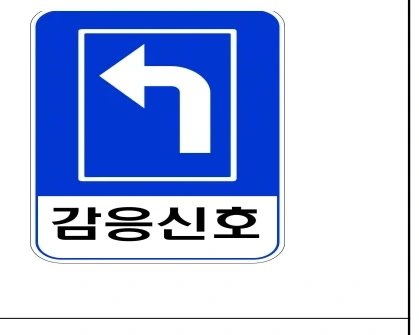

933. 다음 안전표지에 나타난 좌회전 감응신호에 대한 설명으로 틀린 것은?

- ①차량이 도로 위 사각형 표시(검지선) 안에 정차하면 센서가 작동하며, 차량을 감지한다.
- ②좌회전 차량이 없을 때는 직진 신호에 시간을 더 부여할 수 있다.
- ③교통의 흐름을 원활하게 하고, 대기오염의 감소 효과가 기대된다.
- ④작동을 위해서는 정차하여 도로 좌측에 설치된 스위치를 누른 후 잠시 기다려야 한다.
정답 보기
정답
④ 작동을 위해서는 정차하여 도로 좌측에 설치된 스위치를 누른 후 잠시
기다려야 한다.
근거·해설
해당 안전표지는 “좌회전 감응신호” 표지로서 지시표지에 해당한다(도로교통법 시행규칙 [별표6] 335번). 좌회 전 감응신호는 차량이 도로 위 사각형 표시(검지선) 안에 정차하면 센서가 작동하면서 차량을 감지하고, 좌회전 신호를 부여하기 시작한다. 좌회전 차량이 없을 때는 직진 신호에 시간을 더 부여할 수 있어, 교통의 흐름을 원활 하게 하고, 대기오염의 감소 효과가 기대된다. 또, 공회전 시간이 줄어들면서 운전자의 유류비 감소 등 경제적 효 과도 기대할 수 있다(국토교통부 보도자료, 한국도로교통공단 홍보자료).